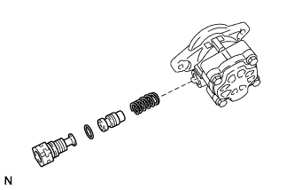
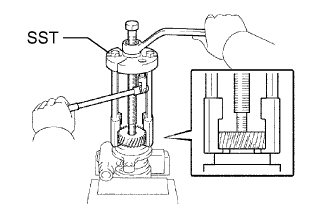
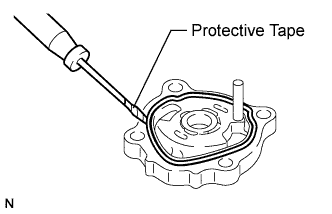
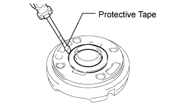
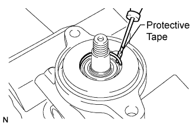
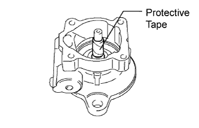
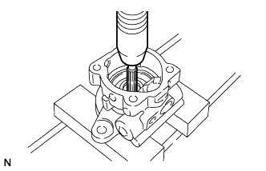
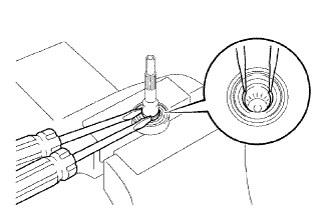
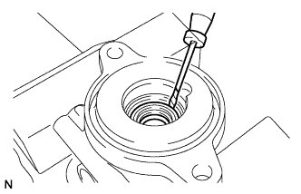

1VD-FTV VANE PUMP > DISASSEMBLY |
| 1. REMOVE POWER STEERING SUCTION PORT UNION |
Remove the bolt and suction port union from the vane pump.
Using a screwdriver, remove the O-ring from the suction port union.
| 2. REMOVE FLOW CONTROL VALVE |
 |
Remove the pressure port union.
Remove the O-ring from the pressure port union.
Remove the flow control valve and compression spring.
| 3. REMOVE VANE PUMP GEAR |
 |
Using soft jaws on a vise, clamp the vane pump.
Using SST, remove the gear.
| 4. REMOVE REAR VANE PUMP HOUSING |
 |
Remove the 4 bolts and rear housing from the front housing.
 |
Using a screwdriver, remove the O-ring from the rear housing.
| 5. REMOVE VANE PUMP ROTOR, 10 VANE PUMP PLATES AND VANE PUMP CAM RING |
Remove the 10 vane pump plates.
Remove the rotor.
Remove the cam ring from the front housing.
| 6. REMOVE VANE PUMP FRONT SIDE PLATE |
Remove the front side plate from the front housing.
 |
Using a screwdriver, remove the O-ring from the front side plate.
 |
Remove the O-ring from the front housing.
| 7. REMOVE VANE PUMP SHAFT WITH VANE PUMP SHAFT BEARING |
 |
Using a screwdriver, remove the snap ring.
 |
Tape the serrated part of the vane pump shaft.
 |
Using a press, press out the shaft with bearing.
| 8. REMOVE VANE PUMP SHAFT BEARING |
 |
Using 2 screwdrivers, remove the snap ring from the shaft.
 |
Using a press, press out the bearing from the shaft.
| 9. REMOVE VANE PUMP HOUSING OIL SEAL |
 |
Using a screwdriver, pry out the oil seal.